01-empty-first-use
初回ログイン。登録資料0、確認0、公開版なし。事前API取込・確認・公開なし。
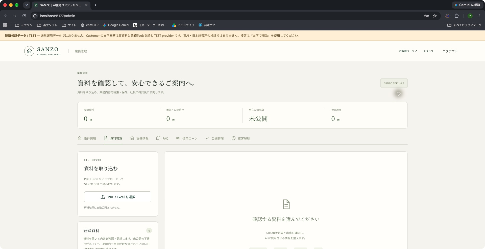
実際の Chrome AX 全文 · 2026-10-08T01:54:14.069Z
02-property-candidate
SDK候補を普通の物件表で照合し、駐車場の未確認表記だけ手入力。下書き保存と確認は別。
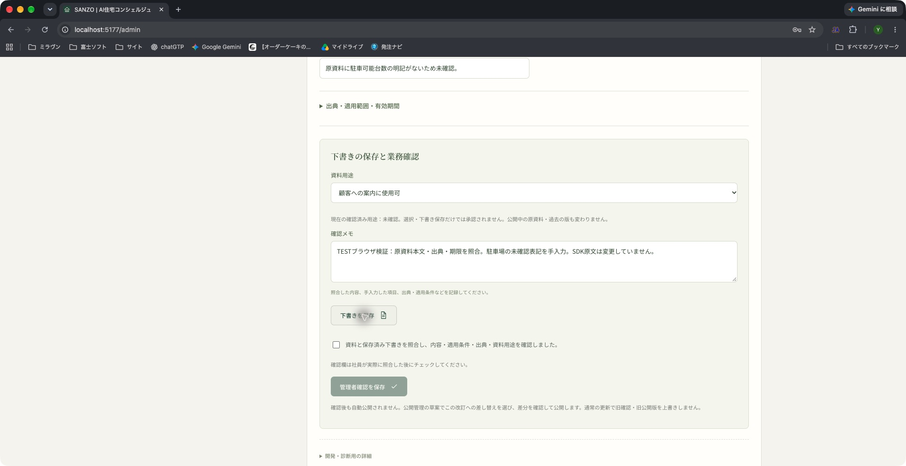
実際の Chrome AX 全文 · 2026-10-08T01:56:26.865Z
03-equipment-confirmed
設備を普通の行フォームで整理・保存・TEST明示確認。15項目保持、JSON不使用。
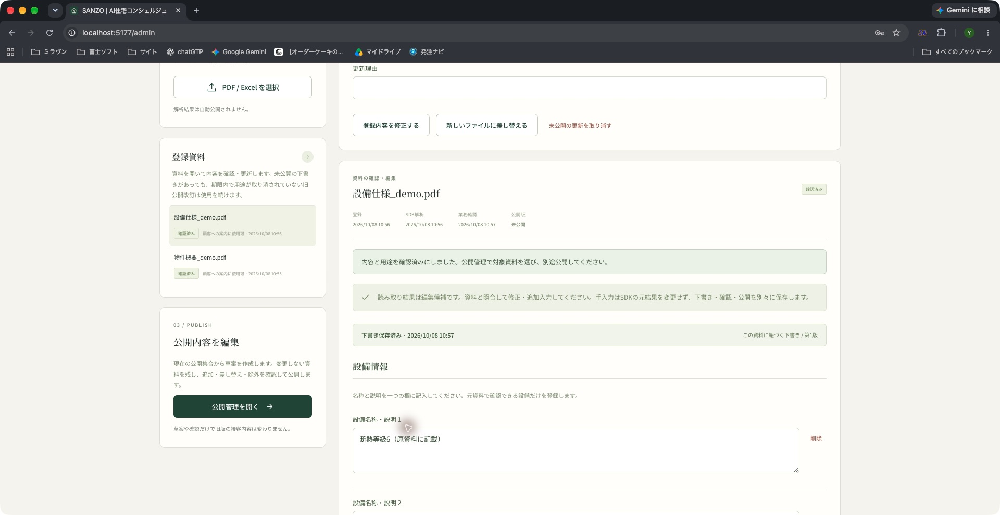
実際の Chrome AX 全文 · 2026-10-08T01:57:28.173Z
04-incomplete-faq-draft
質問が未入力のFAQをBackend下書きへ保存。確認・公開していない。
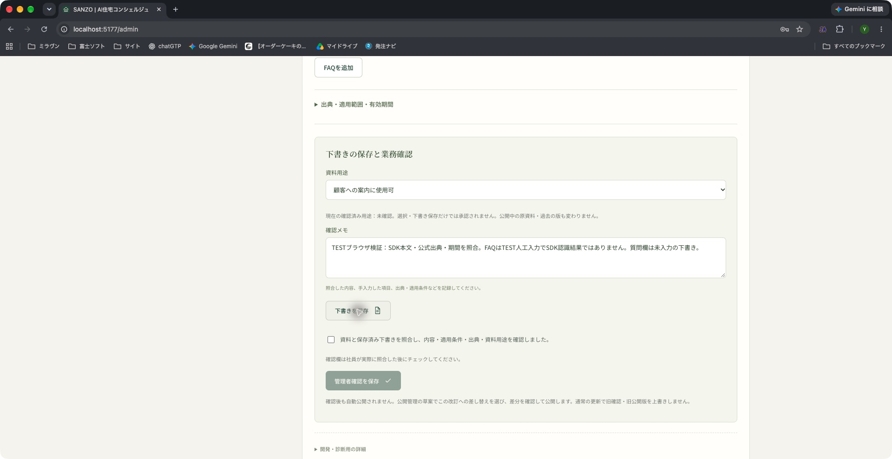
実際の Chrome AX 全文 · 2026-10-08T01:58:06.414Z
05-failure-unsaved-logout
実際に未保存FAQを編集後、ログアウトをクリックすると注意なしでログイン画面へ移った。保存済み不完全草稿は保持、未保存分は失われた。修正前の失敗記録。
最初の問題画面を保持。修正後の再確認とは別です。
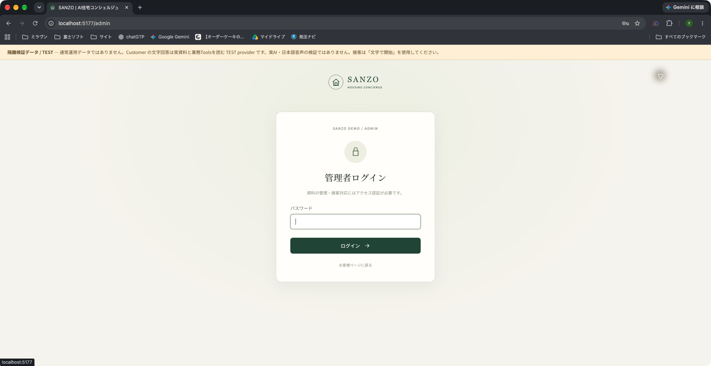
実際の Chrome AX 全文 · 2026-10-08T01:58:26.649Z
06-incomplete-draft-restored
Chrome刷新・再ログイン後も質問未入力のFAQ草稿、初回回答、出典位置、確認メモを復元。未保存の破棄分は保存内容に混入しない。
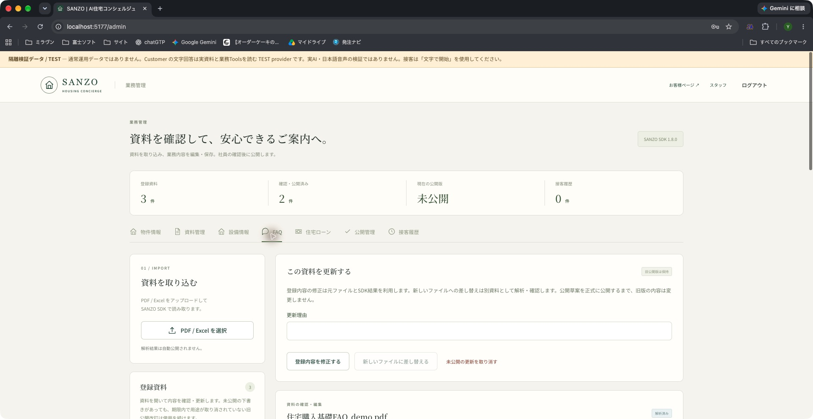
実際の Chrome AX 全文 · 2026-10-08T01:59:41.634Z
07-missing-question-error
確認を実行するとFAQの質問欄に「質問を入力してください。」が表示される。エラーコードだけではない。確認は成立していない。
最初の問題画面を保持。修正後の再確認とは別です。
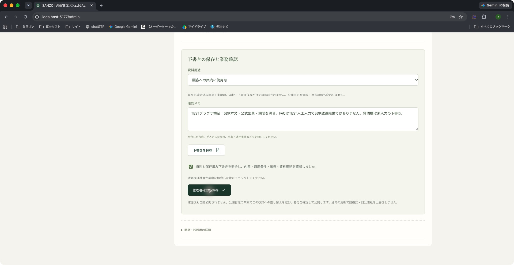
実際の Chrome AX 全文 · 2026-10-08T01:59:49.913Z
08-unsaved-logout-guard
修正後、未保存FAQでログアウトすると保存/破棄を説明する日文確認を表示。
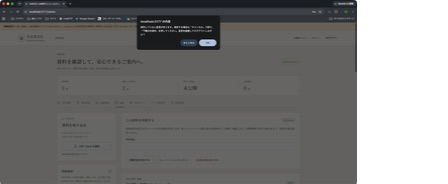
実際の Chrome AX 全文 · 2026-10-08T02:00:27.677Z
09-missing-field-focused
修正後の同じ未確認草稿。確認失敗時、自動で質問欄に移動・フォーカスし「質問を入力してください。」を表示。
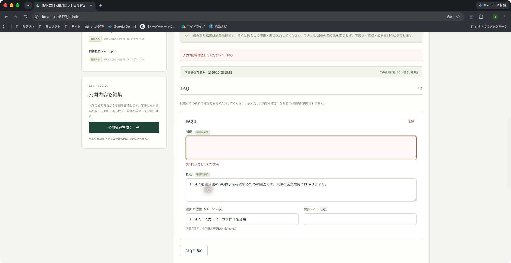
実際の Chrome AX 全文 · 2026-10-08T02:01:21.231Z
10-faq-corrected-confirmed
欠落した質問を普通のFAQ表で補完し、保存後にTESTブラウザで明示確認。原SDK本文とTEST手入力は別。
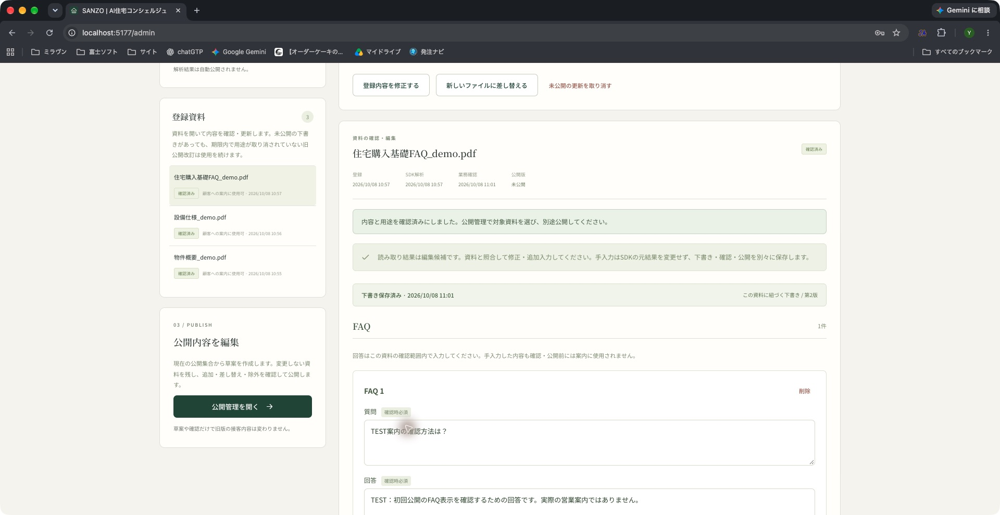
実際の Chrome AX 全文 · 2026-10-08T02:01:36.191Z
11-loan-conditions-form
Excel実SDKの2商品を核対。conditionsを普通の行入力で追加・修正し、補足/数値条件と区別。JSON不使用。
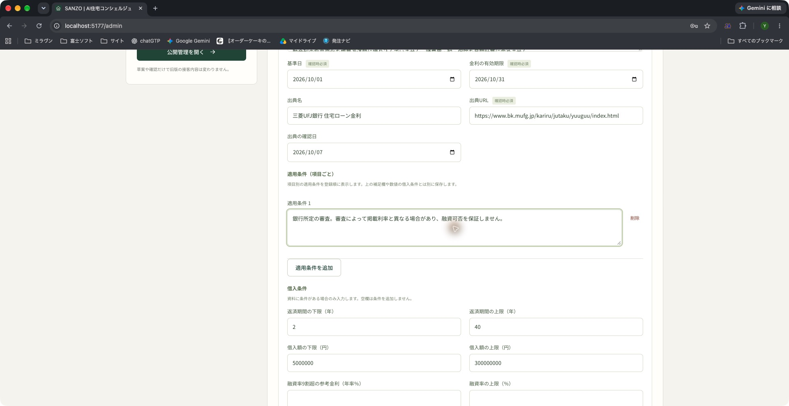
実際の Chrome AX 全文 · 2026-10-08T02:03:48.006Z
12-first-publish-label-before-fix
公開版が存在しない初回状態なのに、入口が「現在の公開版から草案を作成」、説明も更新前提。初回操作の迷いを減らす文言修正対象。
最初の問題画面を保持。修正後の再確認とは別です。
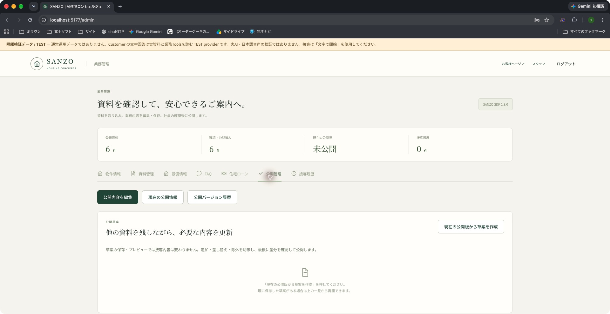
実際の Chrome AX 全文 · 2026-10-08T02:04:01.989Z
13-first-publication-entry
最終同版コード。公開版なしの初回入口を「初めての公開草案を作成」と明示。6資料がTESTブラウザ確認済み、公開はまだ0。
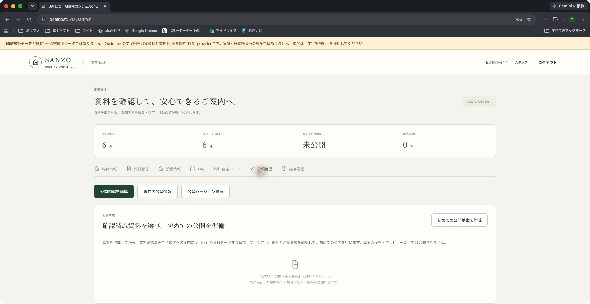
実際の Chrome AX 全文 · 2026-10-08T02:05:42.681Z
14-first-publication-preview
TEST浏览器：初回公開の差分は追加6、差替0、維持0、除外0。妨げる確認事項なし。
PNGは当時の視口だけです。完全な差分文字は同名AXと読回結果を参照。
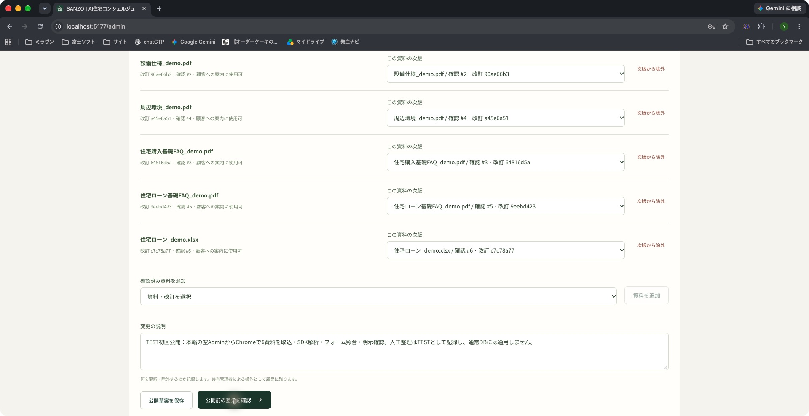
実際の Chrome AX 全文 · 2026-10-08T02:08:22.604Z
15-first-publication-success
Chrome页面明确发布首版v1。仅TEST浏览器人工步骤模拟，不是用户或员工本人确认。
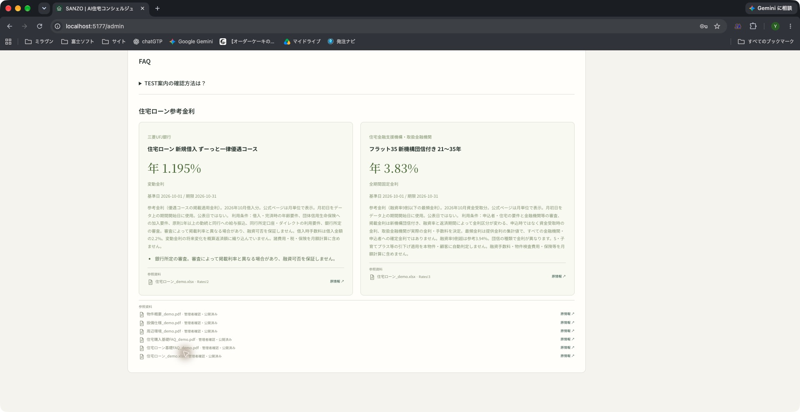
実際の Chrome AX 全文 · 2026-10-08T02:08:27.773Z
16-customer-general-start
隔离Customer首页以一般咨询为中心，无默认物件详情。TEST provider、API未配置、文字开始入口明确。
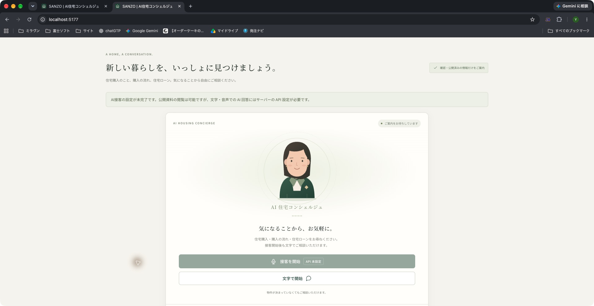
実際の Chrome AX 全文 · 2026-10-08T02:08:37.923Z
17-customer-v1-faq
实际一般知识Tool返回本次已发布FAQ A1；Customer显示v1来源与正文，尚未选物件。
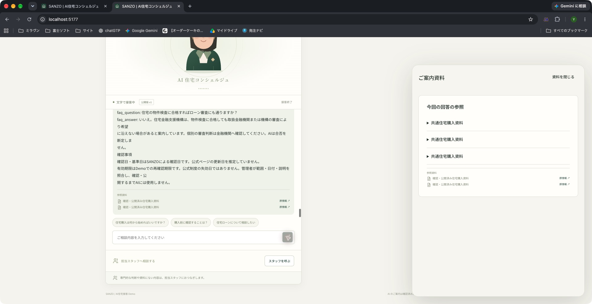
実際の Chrome AX 全文 · 2026-10-08T02:08:46.424Z
18-customer-v1-property-equipment
明示的な物件選択後に実Toolから価格76,900,000円・15設備を取得。フォーム修正「断熱等級6（原資料に記載）」も表示。
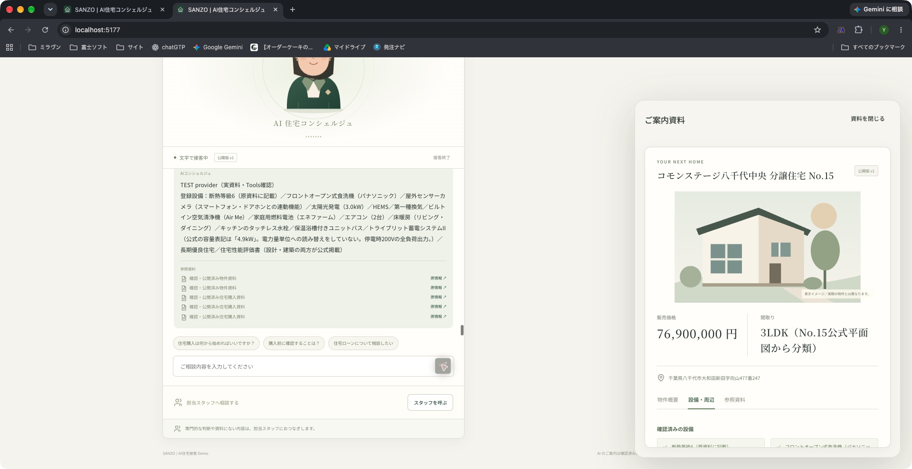
実際の Chrome AX 全文 · 2026-10-08T02:09:02.174Z
19-customer-v1-mortgage
実Backend計算：v1価格76,900,000円・頭金5,000,000円・35年・MUFG1.195%。登録条件と出典も表示。
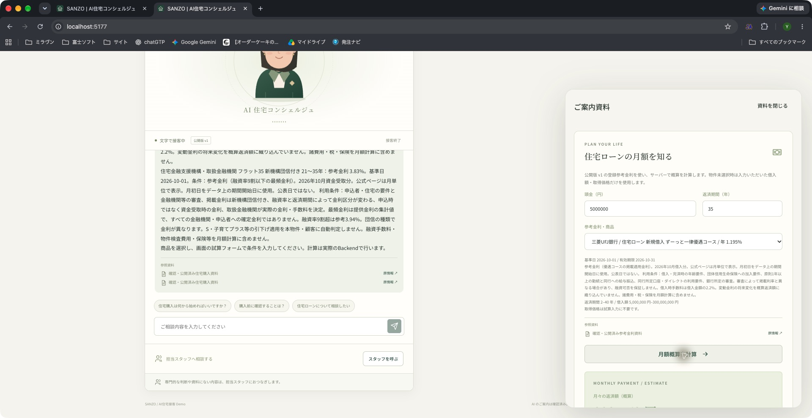
実際の Chrome AX 全文 · 2026-10-08T02:09:18.556Z
20-update-entry
公開済みFAQ資料を明示選択し、登録内容の修正理由を入力。
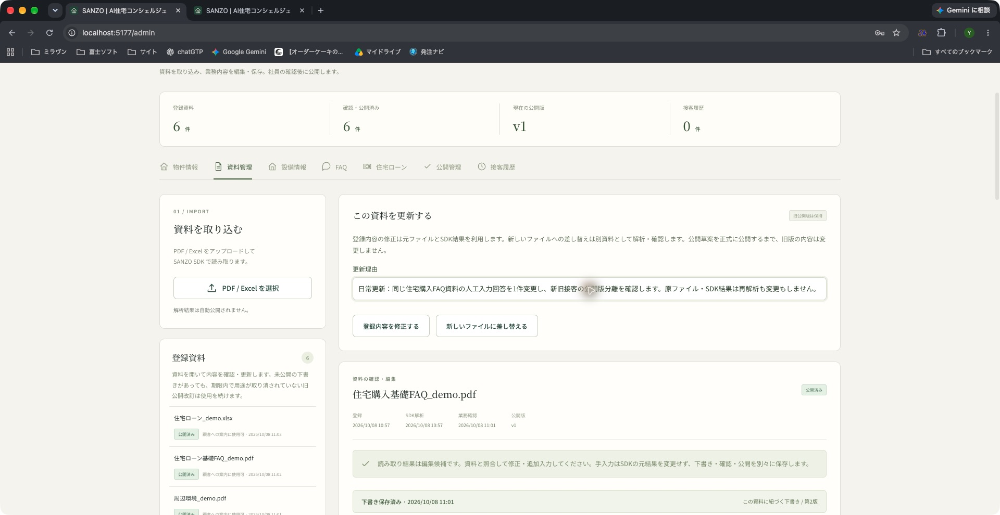
実際の Chrome AX 全文 · 2026-10-08T02:09:30.290Z
21-update-draft-saved
FAQ1件のTEST修正をページ保存。未確認・未公開の下書き、旧v1は保持。
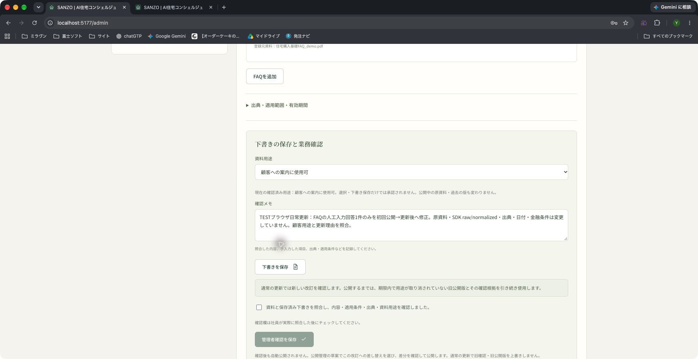
実際の Chrome AX 全文 · 2026-10-08T02:09:40.006Z
22-v1-before-update-confirmation
TEST provider局限：已选物件时走物件知识检索，本次FAQ再问没有命中一般FAQ，不据此声称FAQ A1复验通过。未选物件的一般咨询将在独立v1接客复验。
TEST provider の範囲制限。一般FAQの成功証拠として数えません。
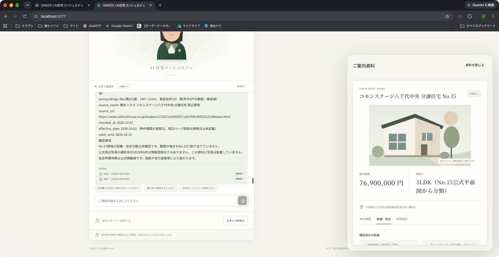
実際の Chrome AX 全文 · 2026-10-08T02:09:42.081Z
23-update-confirmed-not-published
TEST浏览器明确确认FAQ新修订。旧v1发布版仍未改变。
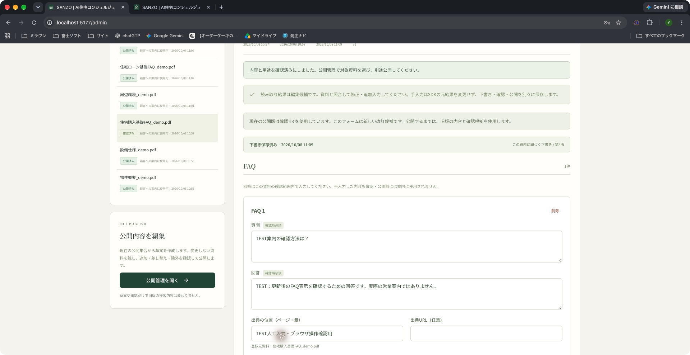
実際の Chrome AX 全文 · 2026-10-08T02:09:43.857Z
24-new-v1-after-update-confirmation
新FAQ修订已确认但尚未发布，新的未选房一般接客仍使用v1、实Tool返回FAQ A1。不以历史字幕充当当前Tool结果。
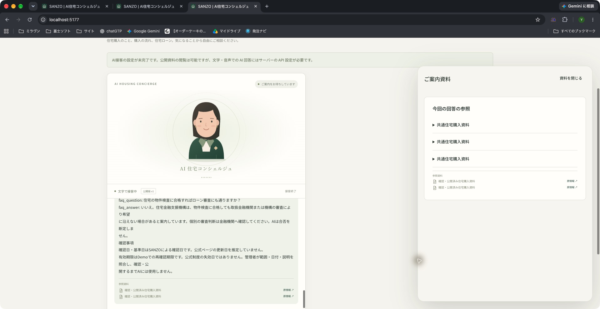
実際の Chrome AX 全文 · 2026-10-08T02:10:00.040Z
25-update-publication-preview
v1基準、FAQのみ確認#3→#7差し替え、他5資料維持、追加0・除外0。A1/A2前後を確認。
PNGは当時の視口だけです。完全な差分文字は同名AXと読回結果を参照。
FAQ前後の同値行が2行表示。非阻塞の観察として保持。
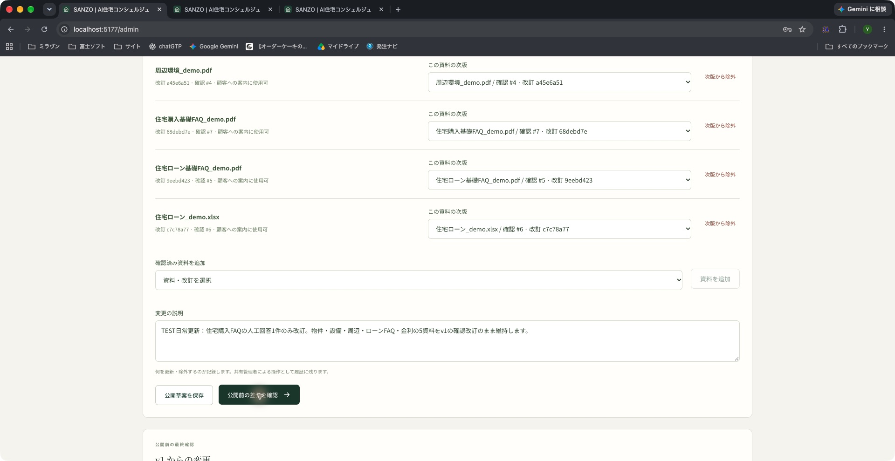
実際の Chrome AX 全文 · 2026-10-08T02:10:22.678Z
26-update-published-v2
Chrome明确发布v2。FAQ替换1、维持5、移除0，成功说明新接客采用新版。
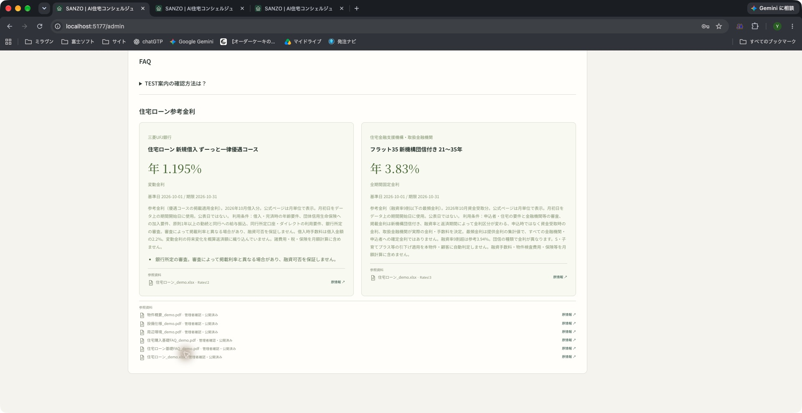
実際の Chrome AX 全文 · 2026-10-08T02:10:30.108Z
27-old-v1-after-v2-publication
v2发布后，同一未选物件的旧v1接客重新调用一般知识Tool仍取得A1，明确保留旧发布版本。
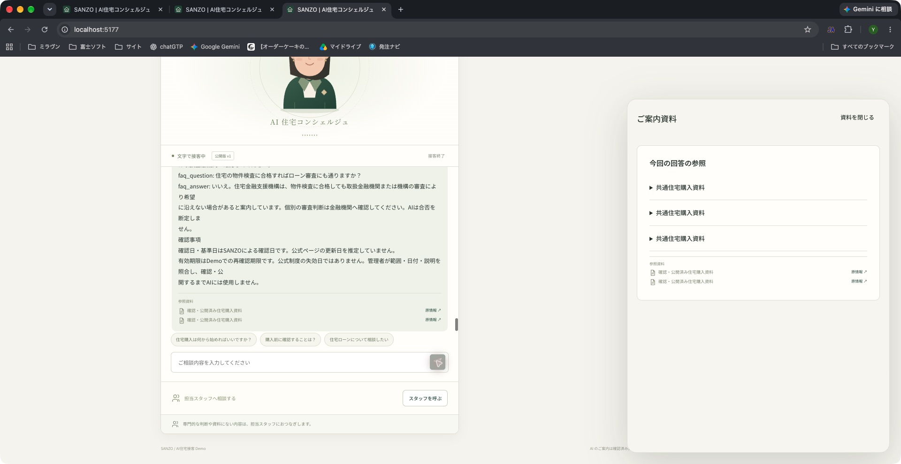
実際の Chrome AX 全文 · 2026-10-08T02:10:32.242Z
28-new-v2-faq
Chrome新接客采用v2，实际一般知识Tool返回FAQ A2，显示源链接。旧v1仍A1，5份资料确认ID维持。
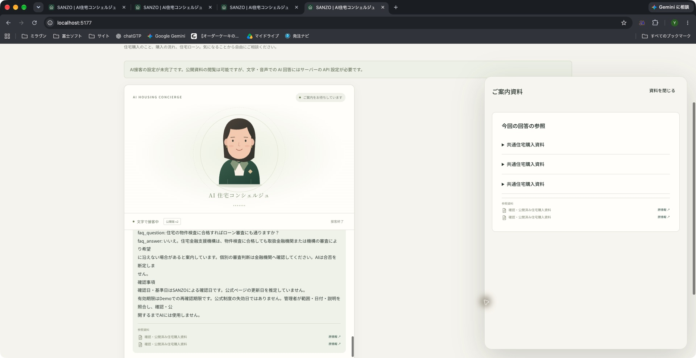
実際の Chrome AX 全文 · 2026-10-08T02:10:39.374Z
29-v2-no-property-mortgage
v2未选房；通过普通试算表单明确输入借款3,000万円、35年，MUFG1.195%。取得价格为空，不代入样本房价；实际Backend计算。
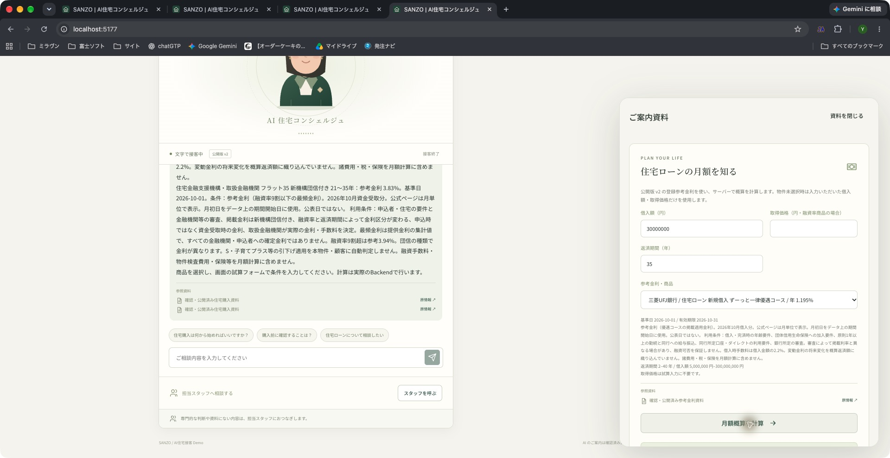
実際の Chrome AX 全文 · 2026-10-08T02:10:59.073Z
30-staff-pending-customer
实际call_staff Tool：贷款审查不保证，Customer pending与呼叫记录联动。TEST provider不是模型行为证明。
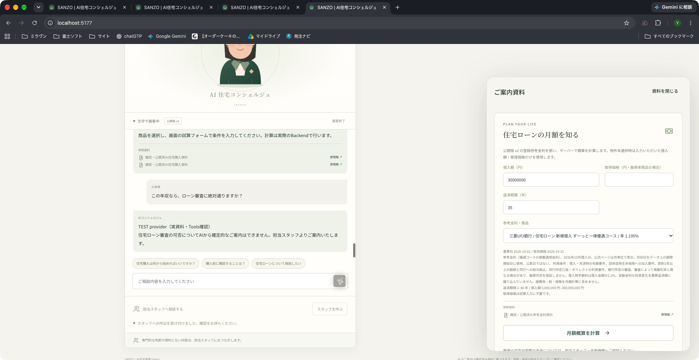
実際の Chrome AX 全文 · 2026-10-08T02:11:00.640Z
31-staff-pending
同套Staff页面读取v2接客call_staff的真实pending记录、呼出理由、最近问题与Session ID。
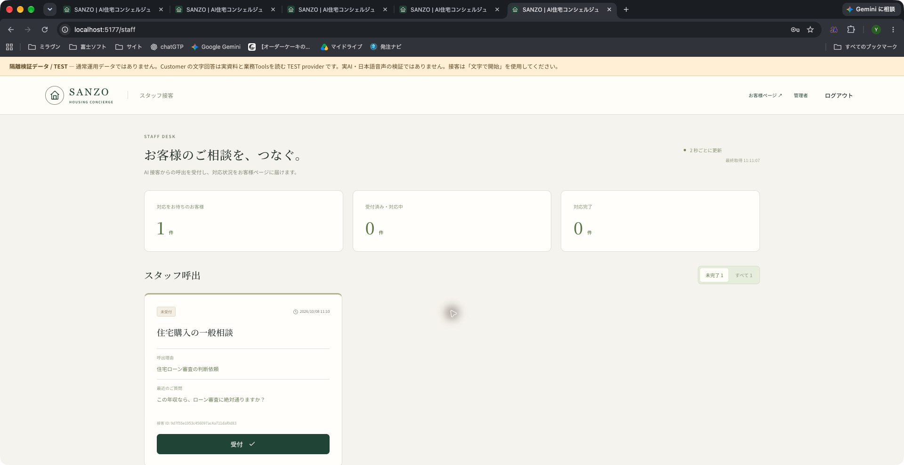
実際の Chrome AX 全文 · 2026-10-08T02:11:08.041Z
32-staff-accepted-customer
Staff页面受付后，Customer轮询同步担当スタッフ正在确认。
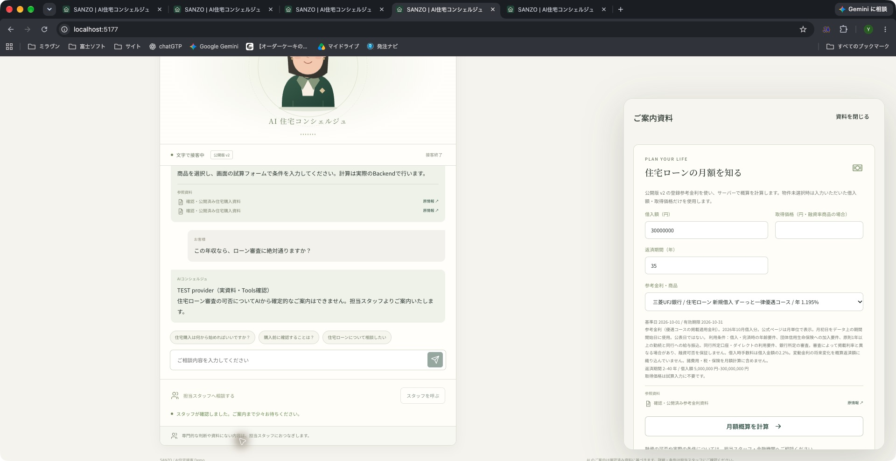
実際の Chrome AX 全文 · 2026-10-08T02:11:09.556Z
33-staff-completed-customer
Staff页面対応完了后，Customer显示对应已完成状态。
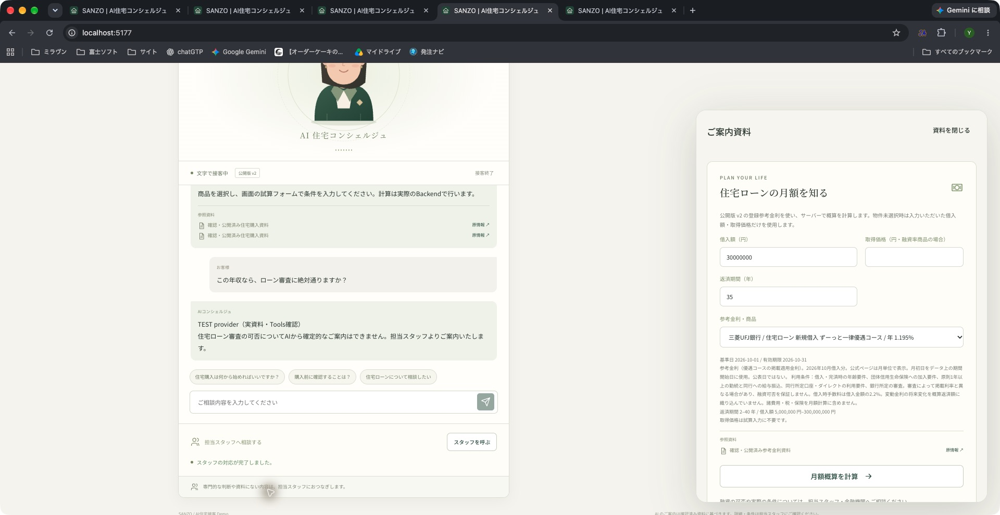
実際の Chrome AX 全文 · 2026-10-08T02:11:11.695Z
34-v2-retained-property-equipment
v2更新FAQ后，保留物件资料和15设备仍由实际Tool取得并展示。
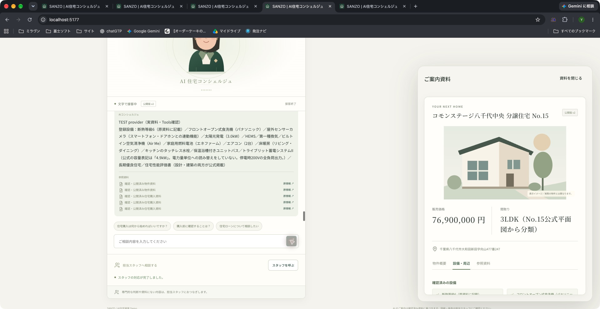
実際の Chrome AX 全文 · 2026-10-08T02:11:24.430Z
35-v2-session-ended
Customer页面结束v2接客，回到可开始状态；文字TEST接客，不是麦克风结束受入確認。
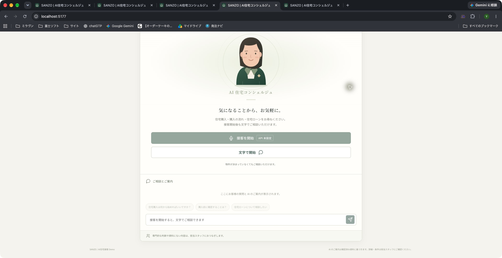
実際の Chrome AX 全文 · 2026-10-08T02:11:25.699Z
36-version-history-v1-v2
公開履歴で共享admin身份、理由、全資料・确认修订显示。v1/v2不覆盖；仅读页面，不创建恢复草案。
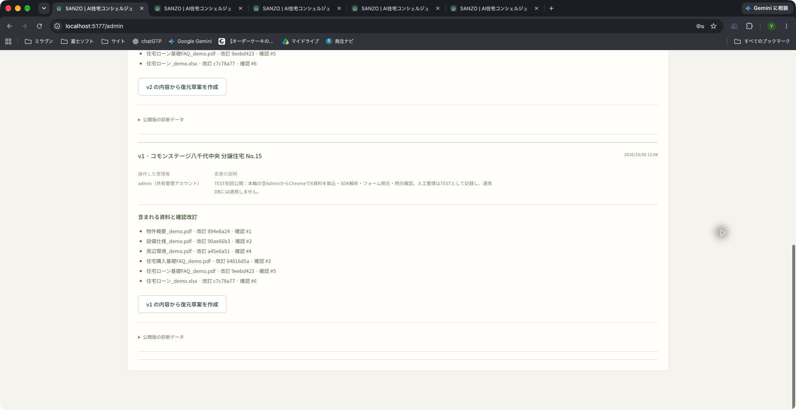
実際の Chrome AX 全文 · 2026-10-08T02:12:17.430Z
37-version-history-v2
v2履歴の6資料と確認修订、共享admin身份、TEST更新理由を画面確認。
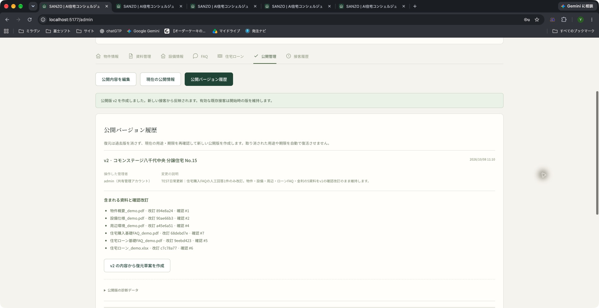
実際の Chrome AX 全文 · 2026-10-08T02:12:23.774Z
38-unsaved-document-switch-warning
同資料内の区分切替は編集内容を保持。別資料切替には未保存変更を破棄するかChrome確認あり。
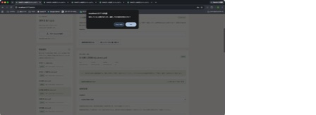
実際の Chrome AX 全文 · 2026-10-08T02:12:34.044Z
39-admin-ready-for-user-review
別資料切替で明示破棄した未保存TEST文は消え、v2の保存FAQ A2が保持。FAQ資料を開き、未保存変更のない状態で引継ぎ。
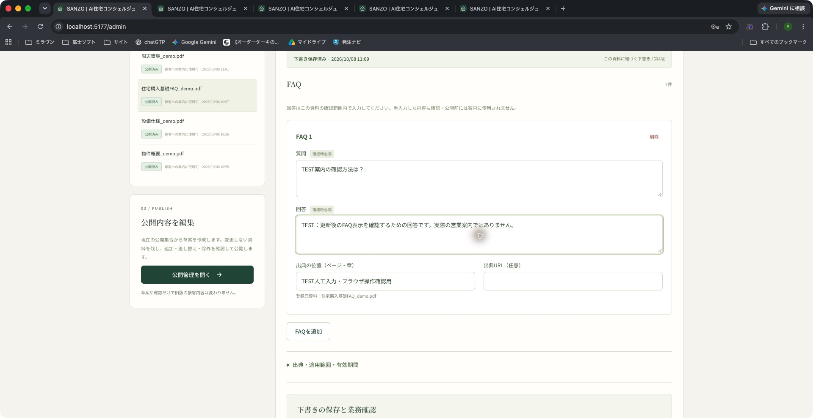
実際の Chrome AX 全文 · 2026-10-08T02:12:57.557Z